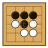

私たちはベイシニア浦安の会員です
ベイシニア浦安は浦安市内51の高齢者団体で結成する連合会で、常盤会の
ような単独のクラブではリーダー、参加人数、会場などの面から実施が
難しい活動を加盟団体が協力して実現しています。
以下のように、本部、女性・体育・文化の三部門がさまざまなイベントを
企画実施しており、私たちも会員なので、実施されるすべての活動に
参加することができます。活動や特別プログラムは加盟クラブからの派遣
者で計画・実行されており、常盤会からも３名の方が参画、協力しています。
各活動の内容を知りたいときや参加したい場合に誰に連絡すればよいかは、
常盤会からの担当者に問い合わせましょう。
以下の活動スケジュールは8月上旬に発表されたものです。
| 催し、大会、行事 | 開催日、内容、参加申し込み要領など | |
|---|---|---|
| 支え合い研修 | 9月15日（火）午後1時半 東野パティオ テーマ 「家族みんなで知ってもらいたい”ぜん息”の話」 講師 順天堂大学 高齢者看護学部 教授・湯浅美千代先生 聴講申し込み 8月31日までに 本部・斎藤へ | |
| e-Sportsの集い | 9月13日（日）午前10時 街づくり活動プラザ体育館 小学生低学年以上、親世代、高齢者まで年齢別大会 自由参加 | |
| 麻雀大会 | 11月17日（火）午前10時 街づくり活動プラザ体育館 参加費（昼食代）1,000円 申し込みは8月末日 本部へ 自由参加 |
本年度の女性部会担当は合田さんです
●特別イベント
| 恒例バザー | 9月25日（金）午前10時から 東野パティオ 手作り作品、差し上げてもよい品物の出品をお待ちします |
●いつもの活動
| フォークダンス | 9月09日（木）午前10時から 文化会館リハーサル室 |
本年度の体育部会担当は大西さんです
●秋季イベント
①ダーツ大会 9月14日（月）まちづくり活動プラザ体育館 参加費400円
・・・申し込みは （締切り）8月22日本部まで
②ゲートボール大会 10月14日 海楽南児童公園ゲートボール場 400円
③グラウンドゴルフ大会 10月16日 KG軟式野球場 400円
④室内ペタンク大会 10月20日 まちづくり活動プラザ体育館 参加費400円
・・・申し込みは （締切り）9月22日本部まで
⑤パークゴルフ大会 10月21日 高洲海浜公園パークゴルフ場 400円
・・・申し込み ②、②、⑤は大西さんまで
●いつもの活動
| ゲートボール | 毎日・午前9時から | 海楽南児童公園ゲートボール場 | |
| グラウンドゴルフ | 毎月・水・午前9時から | 美浜公園 | |
| 〃 | 毎金曜・午前9時から | KG野球場 | |
| パークゴルフ | 毎日・午前9時から | 高洲海浜公園パークゴルフ場 |
本年度の文化部会担当は真鍋さんです
●特別イベント
| 芸能発表大会 | 9月17日（木）午後1時受付 文化会館大ホール 常盤会からさくら会と新舞会が出演、皆さんで声援に行きましょう | |
| カラオケ交流会 | 11月6日（金）文化会館大ホール 出演申し込み（締切り）8月末日 文化部長・柄澤さんへ |
●いつもの活動
 | 囲碁将棋教室 | 9/7,14,28 午後1時～ | 富岡公民館多目的室 |
| 踊りサークル | 9/07 午後1時～ | 文化会館和室 | |
| 〃 | 9/14,28 9時～ | Uセンター多目的ホール | |
| 祭り踊り | 9/12 11時～ | 〃 | |
| ソシアルダンス | 9/01,08 10時半～ | 〃 | |
| 歌謡教室 | 9/09 午後2時～ | 美浜公民館音楽室 | |
| 〃 | 9/16 午後2時～ | 中央公民館視聴覚室 | |
| 民謡教室 | 9/03 午後2時～ | 中央公民館視聴覚室 |